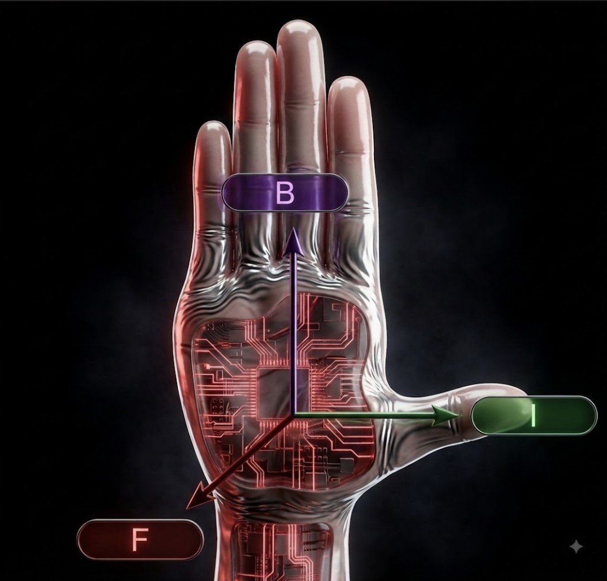

通電導線會受到磁力
把通電導線放進外加磁場，而且電流與磁場互相垂直時，導線會受到磁力。
- 磁場 B：由 N 極指向 S 極。
- 電流 I：用 ⊙ 穿出、⊗ 穿入表示。
- 磁力 F：一定同時垂直於電流與磁場。
右手開掌定則
伸出右手，把大拇指與其餘四指互相垂直：
- 大拇指：代表電流方向 (I)。
- 伸直的四指：代表磁場方向 (B)（由 N 指向 S）。
- 掌心推出的方向：就是導線的受力方向 (F)！
先認清 B 與 I，再用右手驗證 F；不要在腦中旋轉整張圖。

解鎖右手開掌定則，透視馬達旋轉的物理奧秘。
把通電導線放進外加磁場，而且電流與磁場互相垂直時，導線會受到磁力。
伸出右手，把大拇指與其餘四指互相垂直：

A 導線的磁場作用在 B 導線，使 B 受力朝向 A；B 也用相同方式影響 A。
電子向右射入垂直穿入畫面的均勻磁場（⊗），軌跡開始向下彎。磁力永遠垂直於運動方向，只改變方向，不直接改變速率。
馬達就是把「電能」轉換成「動能（旋轉）」的機器，它的內部主要由四大核心零件組成：
當線圈呈水平時，我們套用右手開掌定則：
注意看動畫！當線圈轉到垂直面時：
不論是電風扇、四驅車、還是特斯拉的電動車，要提升馬達的轉速與力量，物理原理完全相同：
上一頁的太陽風大多被地磁場推開，但有少數帶電粒子會順著磁力線，被導向地球的兩個磁極附近：
極光不是晚上才出現，而是晚上才看得見，而且夜側的極光特別亮：
磁力不做功，那極光粒子的能量從哪來？答案藏在磁場本身：
極光動畫中的地球影像：NASA Earth Observatory / Reto Stöckli，Blue Marble Next Generation（2004 年 7 月，去雲的衛星月合成地表資料）。本頁將它縮小並投影成球面視角，不是單張照片，也不是即時影像；磁力線、粒子與標示為教學示意。